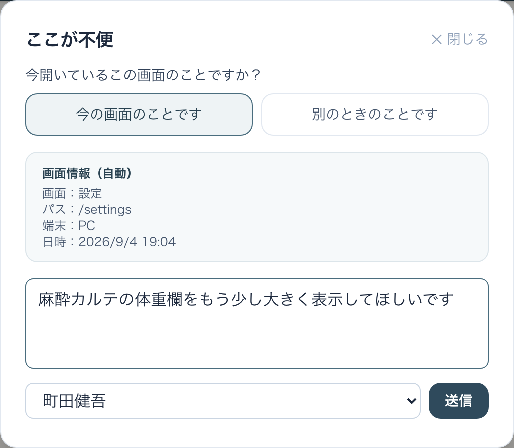
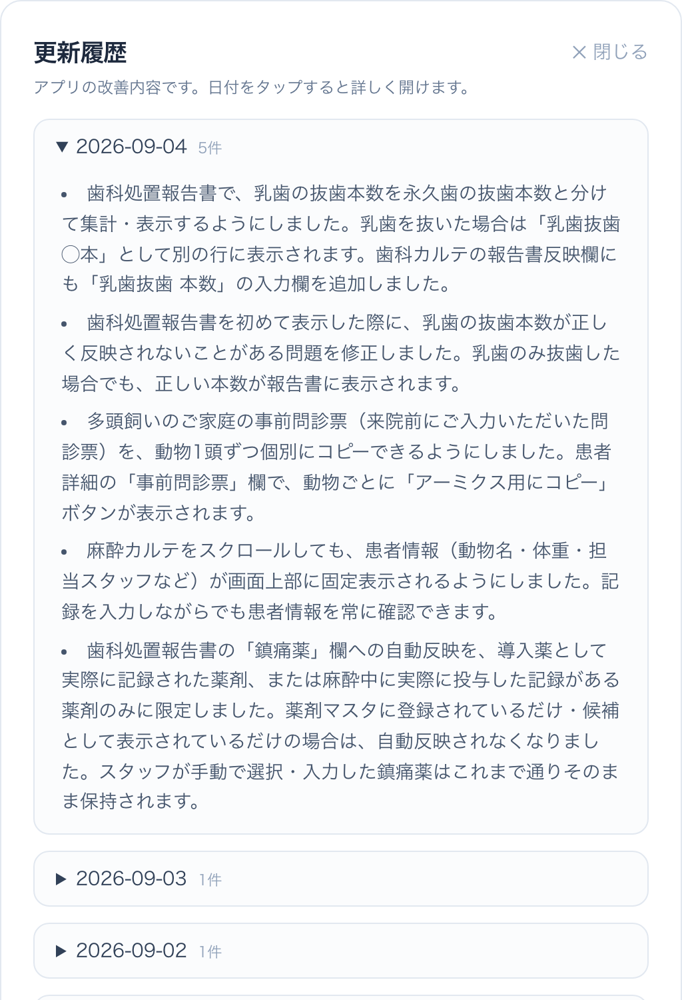

VetLink（院内診療サポート）使用ガイド ← ガイド一覧へ 受付・スタッフ・獣医師向け ｜ 2026年9月4日版 ｜ 荻窪ツイン動物病院
問診票・同意書・麻酔/手術・歯科カルテを、患者情報でひとつにまとめて院内で扱うアプリです。カルテ番号を入れるとアーミックスから患者情報を自動取込。手術予定は予約システムから自動で「本日の麻酔イベント」に並び（今日から1週間先まで）、導入準備→麻酔→術後とステータスが自動で進みます。同意書はiPadで署名でき、入院同意書は署名すると入院管理アプリへ自動連携します。使いにくいところはどの画面からでも「💬 ここが不便」で送れます。iPad・PC・スマホで使えます（iPadが一番見やすいです）。
1. アプリを開く
| 場所 | URL |
|---|---|
| 院内のPC・iPad | http://192.168.20.250:3007 |
| 院外・iPadのホーム画面追加（アプリ化） | https://serverpc.tail2de5bb.ts.net:8450（院の Tailscale 設定が必要） |
共有端末で使う想定のためログイン（パスコード）はありません。開けばすぐ使えます。
2. 上のメニュー（全体像）
| メニュー | できること |
|---|---|
| 患者管理 | 全機能で共通に使う患者の台帳。カルテ番号でアーミックスから取り込めます。 |
| 問診票 | 初診・歯科の問診票づくり。ホームページから届いた問診票の取り込みも。 |
| 同意書 | 入院・麻酔・歯科・ホテル・トリミングの同意書／規約書を作成・iPad署名・管理。 |
| 手術/麻酔 | 当日の麻酔イベント一覧。手術予定の登録、導入薬の準備、術後報告書まで。 |
| 歯科 | 歯科処置カルテ（歯式・歯周・抜歯集計）とカルテ貼り付け用テキスト・報告書。 |
| その他書類 | お花送り状など。カルテ番号から飼主名・住所・電話を自動で入れて印刷できます。 |
| ⚙️ 設定 | 文書テンプレート・スタッフ・薬剤のマスタ管理。 |
メニューの右端には、どの画面からでも使えるボタンが2つあります。
| 🆕 更新履歴 | アプリが何日に何が変わったかを、日付ごとに読めます。 |
| 💬 ここが不便 | 使いにくい点をその場で送れます（下の10章）。 |
3. ホーム画面の見方
開くと「今日やること」がひと目で分かります。問診票の対応待ち・受付でお渡しする書類・本日の歯科初診、そして本日の麻酔イベントが時間順に並びます。

| 表示 | 意味 |
|---|---|
| 問診票 対応待ち | ホームページから届いた・未処理の問診票の件数。 |
| 受付対応待ち書類 | 署名が済んで、受付でお渡し・説明する書類（麻酔前注意事項など）。「一覧へ」で開けます。 |
| 本日の歯科初診 | その日の歯科の初診を、予約システムから自動で並べます。問診票がまだ届いていない方も出ます（「問診票 未提出」）。ご予約時のメモ（ご相談内容）もここで読めます。 |
| 本日の麻酔イベント | その日の手術・麻酔予定。前日／今日／翌日で切り替え（1週間先まで入っています）。各カードから導入準備・麻酔・歯科・同意書・注意事項・報告書へ進めます。 |
| ＋ 麻酔予定を追加 ／ 🖨 一覧PDF | 予定の手動追加と、当日の麻酔一覧の印刷。 |
画面のいちばん下に「すぐ作成する」があり、よく使う書類・問診票をここから直接作れます（下の表の書類）。
4. 患者管理
すべての機能で共有される患者の台帳です。カルテ番号・飼主名・動物名・電話番号で検索できます。

- ＋新規患者：カルテ番号を入れて「アーミックスから取り込む」と、種類・品種・性別・年齢・体重を自動で埋められます（受付PCが動いている日中のみ）。
- アーミックスに無い子・仮の子は仮患者として登録し、あとで正式なカルテ番号にひも付けできます。
5. 手術・麻酔（当日麻酔イベント）獣医師看護師
その日の手術・麻酔を1画面で回します。予約システムに登録された手術予定は、自動でここに並びます（約30分ごとに同期・今日から1週間先まで）。手動で「＋手術予定を登録」もできます。

- 本日の導入薬準備リスト：その日に使う導入薬を薬剤ごとにまとめ、未準備／準備済で管理できます。体重からの予定量は参考値です（当日体重で必ず再確認してください）。
- ステータスは自動で進みます：導入準備 → 麻酔 → 術後。各カードのボタンから開いて記録します。
- 🖨 一覧PDFで当日の麻酔一覧を印刷できます。
- 体重は ✎ から直せます：カードの「✎」で体重欄が開き、アーミクスから最新を取得するか直接入力できます。一度入れた体重は同期で上書きされません（アーミクス側のデータも変わりません）。導入準備では「薬剤量に反映」で、変更後の体重で用量を計算し直せます。
- メモは2種類あります：予約管理表の備考（予約側で書いた内容が5分ごとに自動更新）と、麻酔イベントのメモ（VetLinkで入力・同期で上書きされない）。カードと詳細画面に分けて出ます。
- 麻酔の開始・終了時刻は ✎ で直せます。保存ボタンを押さなくても自動で保存され、麻酔時間の計算にも反映されます。
- 記録の消し方：麻酔タイムラインの各記録（薬剤・輸液・手術イベント・モニター）は🗑から削除できます（確認画面が出ます）。
- iPadは数字用のテンキーが出ます（モニター記録・体重・投薬量・歯周ポケットなど）。小数点あり／整数のみは欄ごとに自動で切り替わります。
6. 同意書・規約書（iPad署名）受付獣医師
入院・麻酔・歯科処置・鎮静・ホテル・トリミングの同意書／規約書を作成し、iPadでその場で署名してもらえます。署名済み・未署名で状態を管理します。

- 患者を選ぶ画面でもアーミックス取込が使えます。麻酔イベントから作れば予定内容が自動で反映されます。
- 入院同意書は、署名が確定すると入院管理アプリへ自動で連携されます（入院管理側で「カルテを作成」を押すだけ）。
- 署名が済んだ「お渡し・説明書類」（麻酔前注意事項など）は、ホームの受付対応待ちに出ます。右上の「PDF印刷」から印刷した場合も、受付対応待ちから自動で消えます。
- 多頭飼育のグループ同意書：複数の患者をまとめて選び、一覧表形式の1枚・署名は飼主1名分で作れます。署名後の画面から「グループ全員分を印刷」ができ、一覧ではグループバッジが付きます（1頭ずつの印刷も残してあります）。
- 麻酔前注意事項は入力が自動で残ります：下書き保存を押さずにページを離れても、戻ると入力内容が復元されます。来院日・処置日・来院時間が未記入でも署名できます。
テンプレート管理獣医師

同意書・規約書の本文は病院側で自由に編集できます。編集すると新しいバージョンとして記録され、すでに署名済みの文書には影響しません。
7. 問診票
- 初診問診票／歯科初診問診票を作成できます。既存患者の問診票も作れます。
- 手書きで使いたい時は空の問診票PDFを開いて印刷できます。
- ホームページの問診フォームから届いた未登録の外部問診票は「問診票」タブにまとまり、内容を確認して患者にひも付けます。一覧には初診・歯科初診・既存患者の問診票がすべて出ます（種類が一覧で分かります）。
- カルテ貼付用テキストをコピー：問診票の詳細画面のボタンで、アーミクスのカルテにそのまま貼れる形でコピーできます。
- あとから患者にひも付けられます：問診票・トリミング規約書の詳細画面の「＋ 患者を紐付ける（アーミクス連携）」から、作成済みの書類も後でひも付け・変更ができます。
- 飼主さんは提出後も直せます：送信完了画面の「入力内容を確認・修正する」から修正・再提出でき、最新の内容がスタッフ側に反映されます。
患者詳細の「事前問診票」
患者詳細画面に、飼主さまが来院前に提出した問診票が出ます。「アーミクス用にコピー」でカルテに貼れる形でコピーでき、多頭のご家庭では動物1頭ずつコピーできます。
間違えて作った書類を移す
仮患者で作ってしまった問診票・同意書・麻酔カルテ・歯科治療指針書は、患者詳細の「書類を別患者へ移動」から正しい患者へ移せます（移動の記録も残ります）。
8. 歯科カルテ獣医師
歯科処置の記録を、歯式・歯周ポケット・動揺・抜歯集計まで含めて残せます。
- 記録からカルテ貼り付け用テキストを作れます（口腔内の状況→検査→治療の順・担当獣医師つき・抜歯本数などは会計用に箇条書き）。アーミックスのカルテに貼り付けて使います。
- 抜歯集計では犬歯（104・204・304・404）を単根歯と分けて数えます。乳歯の抜歯は永久歯と分けて「乳歯抜歯 ◯本」として集計されます。
- 歯のイラスト付きの報告書PDFも作れます。「歯磨き不要（残存歯なし）」にチェックすると、画面・PDF・カルテ貼付テキストのすべてから歯磨きの案内が消えます。
- 処置・症状の選択肢に歯冠短縮・歯肉短縮を追加しました。「傾斜移動／乳歯傾斜移動」は「即時傾斜移動」に名前を統一しています（同意書・カルテ・報告書とも）。
- 報告書の鎮痛薬は、実際に記録・投与した薬剤だけが自動で入ります（マスタに登録してあるだけの薬は入りません）。手で選んだ内容はそのまま残ります。
9. 設定（マスタ管理）獣医師
薬剤管理

よく使う薬剤・輸液を、分類・濃度・標準用量・投与経路つきで登録します。「🚑 緊急薬プロトコル管理」もここから開けます。
スタッフ管理

手術予定の担当者・麻酔記録・各種記録者で使うスタッフを登録します。文書テンプレート管理も設定の中にあります。
10. 「💬 ここが不便」で改善をお願いする受付看護師獣医師
使っていて「ここが面倒」「こうだったらいいのに」と思ったら、どの画面からでも右上の「💬 ここが不便」から送ってください。多くはそのまま改修されます。

- 「今の画面のことです」を押すと、画面名・端末・日時が自動で付きます（どの画面の話か説明しなくて済みます）。
- 後から思い出して送るときは「別のときのことです」。直近1週間に開いた画面から選べます。分からなければ「わからない・一覧にない」でもそのまま送れます。
- 内容を書いて、記入者を選んで「送信」。送信後に「たいてい数日で直ります」と出れば受付完了です。
🆕 更新履歴

「前と動きが違う」と思ったときはここを見てください。日付ごとに、何が変わったかが書いてあります。
11. ステータスの色・意味
| 表示 | 意味 |
|---|---|
| 予定 | これからの麻酔イベント。 |
| 導入準備 / 麻酔中 | 準備・麻酔が進行中。麻酔時間が自動でカウントされます。 |
| 覚醒中 / 術後 | 麻酔が終わり、術後管理・報告書の段階。 |
| 同意書 未取得 / 未作成 | まだ足りていない書類。赤は「対応が必要」の目印です。 |
| 署名済み ／ 未署名 | 同意書の署名状態。署名済みでお渡し待ちの書類は受付対応待ちに出ます。 |
12. よくある質問
| 質問 | 答え |
|---|---|
| ログイン（パスコード）は要りますか？ | いりません。共有端末用に、開けばすぐ使えます。 |
| 手術予定が出てこない | 予約システムへの登録内容（メニュー名）をご確認ください。反映は約30分ごとの自動同期で、今日から1週間先まで入ります。急ぐ時は「＋手術予定を登録」で手動追加できます。 |
| 歯科初診の方が一覧に出ない | 予約システムの「初診（歯科）」で予約が入っているかをご確認ください。問診票がまだでも予約があれば出ます。 |
| 画面が古いまま／新しい機能が出ない | 更新は自動で入ります。まれに切り替わらない時は、画面を下に引いて再読み込みしてください。 |
| iPadで数字が打ちにくい | 数値の欄をタップすると専用のテンキーが出ます（小数点あり／整数のみは欄ごとに自動）。 |
| 患者情報が自動で入らない | アーミックス取込は受付PCが動いている日中のみです。動いていない時は手動入力／仮患者で進められます。 |
| iPadでPDFの「戻る」や印刷ができない | ホーム画面追加した https://…:8450 から開いてください。アプリ内ビューアで戻る・印刷ができます。 |
| 使いにくい・こうしてほしい | 画面右上の「💬 ここが不便」から送ってください（10章）。すぐ直せることが多いです。 |